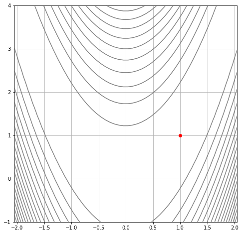
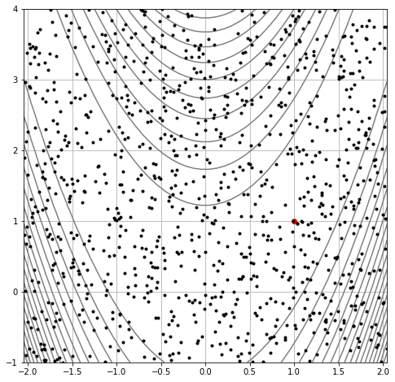
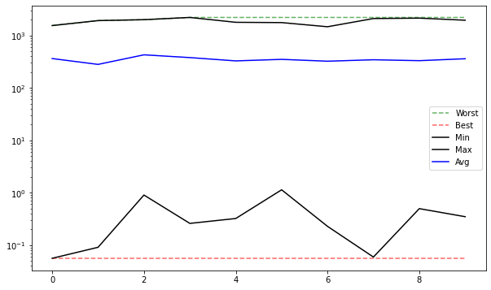
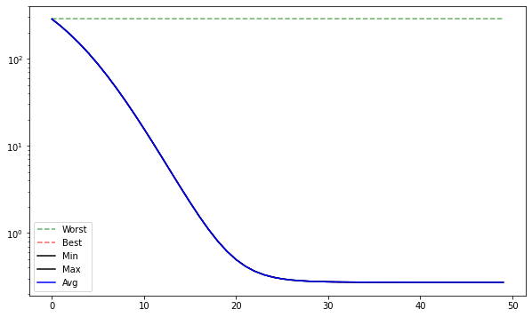
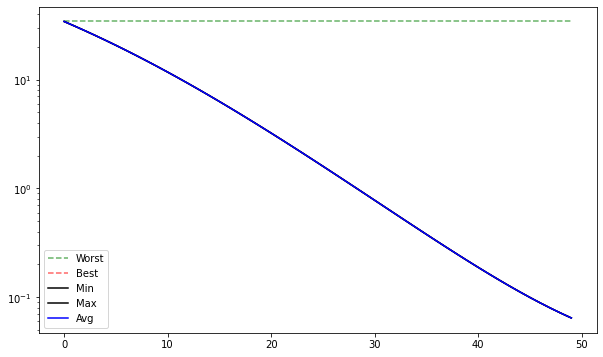
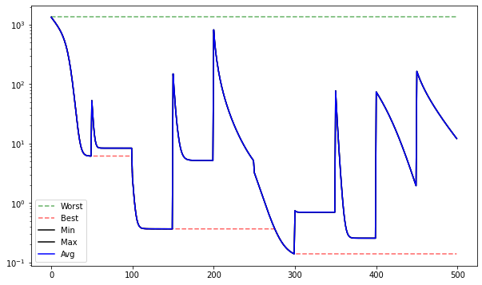
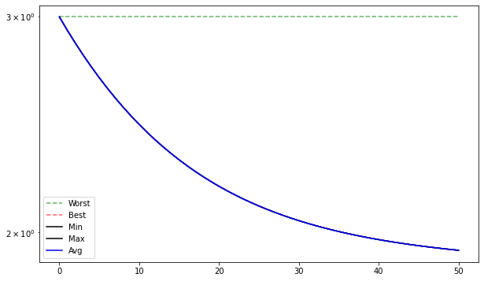
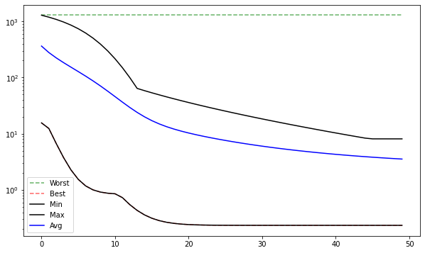
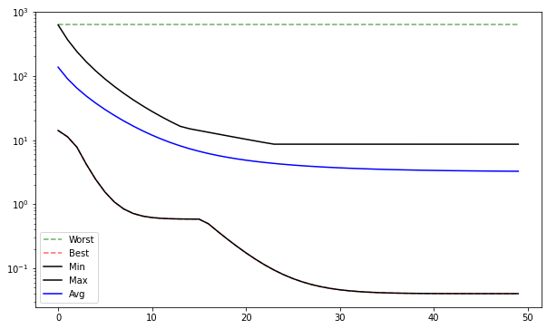

Búsqueda exhaustiva, Monte Carlo y gradiente descendente¶
30:00 min | Última modificación: Mayo 21, 2021 | [YouTube]
[1]:
import math
import matplotlib.pyplot as plt
import numpy as np
Definición del problema¶
[2]:
from plots import plot_contour, plot_surface
from testfunctions import rosenbrock as fn
#
# Se desea encontrar el punto de mínima de la función de
# Rosenbrock de dos dimensiones. El punto de mínima es
# f(1, 1) = 0. La región de busqueda es
#
# -2.048 < x < 2.048
# -1. < y < 4.
#
plot_surface(
fn,
x_bounds=[(-2.048, 2.048), (-1, 4)],
)

[3]:
plot_contour(
fn,
x_bounds=[(-2.048, 2.048), (-1, 4)],
minimum=[(1, 1)],
)

Búsqueda exhaustiva¶
[4]:
#
# Este método consiste en generar una malla de puntos.
# El punto de mínima corresponde al menor valor
# encontrado dentro de la malla.
#
# limites de la región de búsqueda
xb = (-2.048, 2.048)
yb = (-1.0, 4.0)
# número de puntos de la malla
n_points = 50
X = np.linspace(start=xb[0], stop=xb[1], num=n_points)
Y = np.linspace(start=yb[0], stop=yb[1], num=n_points)
X, Y = np.meshgrid(X, Y)
Z = np.array([(x, y, fn(np.array([x, y]))) for x, y in zip(X.ravel(), Y.ravel())])
# búsca el punto de mínima
from operator import itemgetter
Z = sorted(Z, key=itemgetter(2))
# punto de mínima encontrado y cantidad de puntos evaluados
Z[0], len(Z)
[4]:
(array([0.96130612, 0.93877551, 0.02300652]), 2500)
[5]:
#
# Este método no es viable cuando aumenta la cantidad de
# dimensiones de la función a minimizar.
#
# puntos_a_evaluar = n_points ** n_dims
#
# El crecimiento es exponencial.
#
n_points = 50
n_dims = np.array(range(1, 11))
fn_evals = np.power(n_points, n_dims)
plt.plot(n_dims, fn_evals, ".-k")
plt.yscale("log")
plt.show()

Método de Monte Carlo¶
[6]:
#
# Consiste en generar un muestreo aleatorio de la región
# factibles y escoger el mejor punto encontrado
#
n_points = 1000
X = np.random.uniform(low=xb[0], high=xb[1], size=n_points)
Y = np.random.uniform(low=yb[0], high=yb[1], size=n_points)
Z = np.array([(x, y, fn(np.array([x, y]))) for x, y in zip(X, Y)])
Z_sorted = sorted(Z, key=itemgetter(2))
#
# punto de mínima encontrado y cantidad de puntos evaluados
#
Z_sorted[0], len(Z_sorted)
[6]:
(array([1.10859582, 1.21495305, 0.03148179]), 1000)
[7]:
#
# Se grafican los puntos generados aleatoriamente sobre el
# contorno de la función.
#
plot_contour(
fn,
x_bounds=[(-2.048, 2.048), (-1, 4)],
minimum=[(1, 1)],
)
plt.gca().plot(X, Y, ".k")
[7]:
[<matplotlib.lines.Line2D at 0x7efcfc1d3550>]

Para analizar el comportamiento resulta más interesante considerar la generación de 10 bloques de 100 elementos aleatorios cada uno.
[8]:
from generators import RandomUniform
#
# Crea una función que genera soluciones uniformemente
# distribuidas en el hipercubo definido por los límites
# low y high
#
monte_carlo = RandomUniform(pop_size=100, low=[-2.048, -1.0], high=[2.048, 4.0])
#
# Genera una muestra aleatoria de 100 soluciones
#
solutions = monte_carlo()
#
# Primeros 5 vectores aleatorios
#
solutions[:5]
[8]:
[{'x': array([2.00234477, 2.70014476]), 'fn_x': None},
{'x': array([-1.67624568, 3.7638967 ]), 'fn_x': None},
{'x': array([1.47587746, 2.64047329]), 'fn_x': None},
{'x': array([-0.65671238, -0.60125541]), 'fn_x': None},
{'x': array([0.96377444, 3.97108144]), 'fn_x': None}]
[9]:
#
# Evaluación de la función objetivo
#
from fnevaluator import FnEvaluator
#
# Crea una instancia del evaluador que permite evaluar la
# función de rosenbrock para cada elemento de la muestra
# de soluciones
#
evaluator = FnEvaluator(fn)
#
# Evalua la muestra aleatoria
#
solutions = evaluator(solutions)
#
# Primeros 5 vectores aleatorios evaluados
#
solutions[:5]
[9]:
[{'x': array([2.00234477, 2.70014476]), 'fn_x': 172.41558861738238},
{'x': array([-1.67624568, 3.7638967 ]), 'fn_x': 98.19242293399303},
{'x': array([1.47587746, 2.64047329]), 'fn_x': 21.594798099704782},
{'x': array([-0.65671238, -0.60125541]), 'fn_x': 109.35580461454485},
{'x': array([0.96377444, 3.97108144]), 'fn_x': 925.5117270830332}]
[10]:
from stats import Statistics
#
# Se instancia un objeto para computar las estadísticas de
# la corrida
#
stats = Statistics()
#
# Se generan 10 poblaciones de 100 elementos cada una
#
for i_run in range(10):
#
# Generación de la población
#
solutions = monte_carlo()
#
# Se evalua la función objetivo
#
solutions = evaluator(solutions)
#
# Se computan las estadísticas de la población actual
#
stats(solutions)
#
# Evolución de las estadísitcas para cada corrida. El
# algoritmo no aprovecha la información obtenida sobre
# la superficie en cada una de las 10 iteraciones. El
# valor promedio de la función objetivo no mejora.
#
stats.plot()

[11]:
#
# Valor mínimo encontrado en cada una de las 10 corridas
#
stats.min
[11]:
[0.03691295879038481,
0.5941923329960777,
0.5274965631861956,
0.09602579613898571,
1.0971603487492656,
2.7204400566238527,
0.3593045128732077,
1.8612783057941003,
0.9004533752617557,
1.4234081221807569]
[12]:
#
# Mejor valor encontrado en cada una de las 10 corridas.
# Despues de la 3ra corrida no mejora
#
stats.best
[12]:
[0.03691295879038481,
0.03691295879038481,
0.03691295879038481,
0.03691295879038481,
0.03691295879038481,
0.03691295879038481,
0.03691295879038481,
0.03691295879038481,
0.03691295879038481,
0.03691295879038481]
Método del Gradiente¶
[13]:
#
# El método del gradiente descendente aprovecha la
# información local que entrega el punto actual para
# generar una aproximación mejor al mínimo.
#
from gd import GradientDescendent
#
# Se crea una instancia del optimizador. Cada llamada
# realiza una sola iteración del método del gradiente
# descendente.
#
optimizer = GradientDescendent(fn=fn, learning_rate=0.0001)
#
# Se crea una instancia del geneador para crear poblaciones
# de una sola solución.
#
monte_carlo = RandomUniform(
pop_size=1,
low=[-2.048, -1.0],
high=[2.048, 4.0],
)
#
# Se crea la población de soluciones
#
solutions = monte_carlo()
#
# Se instancia un objeto para computar las estadísticas de
# la corrida
#
stats = Statistics()
#
# Se realizan NITER iteraciones del algoritmo de gradiente
# descendente
#
NITER = 50
for iter in range(NITER):
#
# El único individuo existente tiene indice 0
#
solutions = optimizer(solutions)
#
# Se computan las estadísticas de la población actual
#
stats(solutions)
solutions[0].x, solutions[0].fn_x
[13]:
(array([-1.39411328, 1.95912742]), 5.756038251057739)
[14]:
#
# Valor mínimo encontrado en cada iteración
#
stats.min
[14]:
[920.7295506426381,
879.917993998467,
839.8529109696777,
800.3710904501464,
761.3064420052051,
722.493337086676,
683.7714940715882,
644.9926883011417,
606.0294893156171,
566.7860582338607,
527.2107486833628,
487.30982488281825,
447.1610476528308,
406.92524040958995,
366.8533616207922,
327.2862867096162,
288.64470417211646,
251.40749802273334,
216.07881073482852,
183.14645448334494,
153.03689640252364,
126.07384640769565,
102.4477063721081,
82.2014050795217,
65.23477350214851,
51.32562578481733,
40.16239590968201,
31.381529207433864,
24.60311947265716,
19.460061721296057,
15.6183993027648,
12.788754170649979,
10.730237822071723,
9.248931595866221,
8.193056889590657,
7.446595019086216,
6.922609463818036,
6.557036593391473,
6.303326227397339,
6.128049951976352,
6.007438119938575,
5.924728346491234,
5.868181588044938,
5.829624656896706,
5.803395106030667,
5.785586428928978,
5.773513294118983,
5.765335655643624,
5.759796249041159,
5.756038251057739]
[15]:
stats.plot()

[16]:
#
# Trayectoria del punto inicial al punto final
#
x = [point[0] for point in stats.x]
y = [point[1] for point in stats.x]
plot_contour(
fn,
x_bounds=[(-2.048, 2.048), (-1, 4)],
minimum=[(1, 1)],
)
plt.gca().plot(
x,
y,
"o-k",
alpha=0.5,
)
plt.gca().plot(
x[0],
y[0],
"o",
c="black",
fillstyle="none",
markersize=11,
markeredgewidth=2,
)
plt.gca().plot(
x[-1],
y[-1],
"o",
c="red",
fillstyle="none",
markersize=11,
markeredgewidth=2,
)
plt.show()

Método del gradiente descendente con reinicio¶
[17]:
#
# El resultado del método es dependiente del punto de
# arranque por lo que se suele reiniciar la optimización
# usando puntos de arranque aleatorios
#
# Crea una instancia del optimizador
optimizer = GradientDescendent(fn=fn, learning_rate=0.0001)
# Estadísticas de las corridas
stats = Statistics()
# Generador del punto aleatorio
monte_carlo = RandomUniform(
pop_size=1,
low=[-2.048, -1.0],
high=[2.048, 4.0],
)
# Número de reinicios
NRESTARTS = 10
# Número de iteraciones para cada reinicio
NITER = 50
for cycle in range(NRESTARTS):
# reinicio
solutions = monte_carlo()
for iter in range(NITER):
# El único individuo existente tiene indice 0
solutions = optimizer(solutions)
# Se computan las estadísticas de la población actual
stats(solutions)
stats.x_opt, stats.fn_opt
[17]:
(array([-0.09122663, 3.6670279 ]), 1339.8034439417352)
[18]:
stats.plot()

Búsqueda de un buen punto de inicio¶
[19]:
#
# En superficies dificiles, malos puntos de inicio suelen
# llevar a malas soluciones finales, por lo que se puede
# usar una técnica como Monte Carlo para encontrar un buen
# punto de arranque
#
# Crea una instancia del optimizador
optimizer = GradientDescendent(fn=fn, learning_rate=0.0001)
# Estadísticas de las corridas
stats = Statistics()
# Cantidad de soluciones simultánteas
POPSIZE = 10
# Generador del punto aleatorio
monte_carlo = RandomUniform(
pop_size=POPSIZE,
low=[-2.048, -1.0],
high=[2.048, 4.0],
)
# Número de iteraciones
NITER = 50
# Genera una población inicial de soluciones
solutions = optimizer(solutions)
stats(solutions)
#
# Crea una instancia del seleccionador
#
from selection import BestK
best_k = BestK(K=1)
solutions = best_k(solutions)
for iter in range(NITER):
solutions = optimizer(solutions)
stats(solutions)
stats.x_opt, stats.fn_opt
[19]:
(array([ 0.15202088, -0.3073373 ]), 11.638633566238473)
[20]:
stats.plot()

Genetización del método del gradiente descendente¶
[21]:
#
# Se refiere al hecho de tener una población de soluciones
# y en cada ciclo, cada una realiza un ciclo del gradiente
# descendente (o cualquier otra técnica de búsqueda local)
#
# Crea una instancia del optimizador
optimizer = GradientDescendent(fn=fn, learning_rate=0.0001)
# Estadísticas de las corridas
stats = Statistics()
# Cantidad de soluciones simultánteas
POPSIZE = 10
# Generador del punto aleatorio
monte_carlo = RandomUniform(
pop_size=POPSIZE,
low=[-2.048, -1.0],
high=[2.048, 4.0],
)
# Número de iteraciones
NITER = 50
# Generación de las soluciones iniciales
solutions = monte_carlo()
for iter in range(NITER):
solutions = optimizer(solutions)
stats(solutions)
stats.x_opt, stats.fn_opt
[21]:
(array([-1.65669621, 3.56747636]), 74.76362015928713)
[22]:
stats.plot()

[23]:
#
# Trayectoria del punto inicial al punto final
#
x = [point[0] for point in stats.x]
y = [point[1] for point in stats.x]
plot_contour(
fn,
x_bounds=[(-2.048, 2.048), (-1, 4)],
minimum=[(1, 1)],
)
plt.gca().plot(
x,
y,
"o-k",
alpha=0.5,
)
plt.gca().plot(
x[0],
y[0],
"o",
c="black",
fillstyle="none",
markersize=11,
markeredgewidth=2,
)
plt.gca().plot(
x[-1],
y[-1],
"o",
c="red",
fillstyle="none",
markersize=11,
markeredgewidth=2,
)
plt.show()
